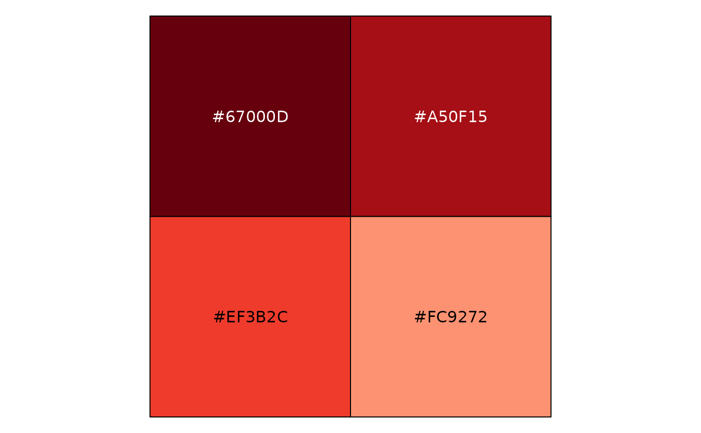
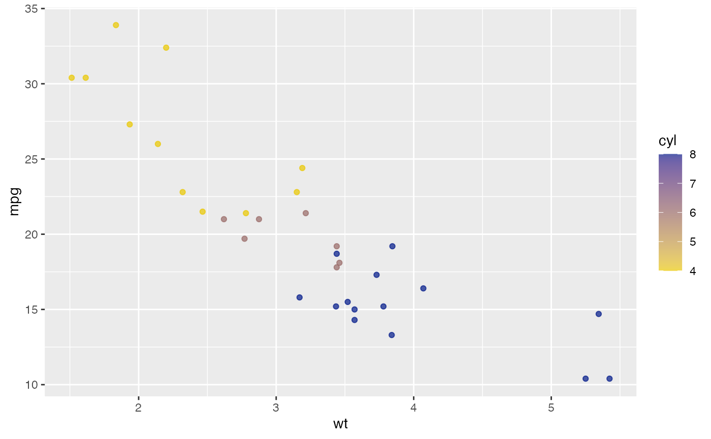
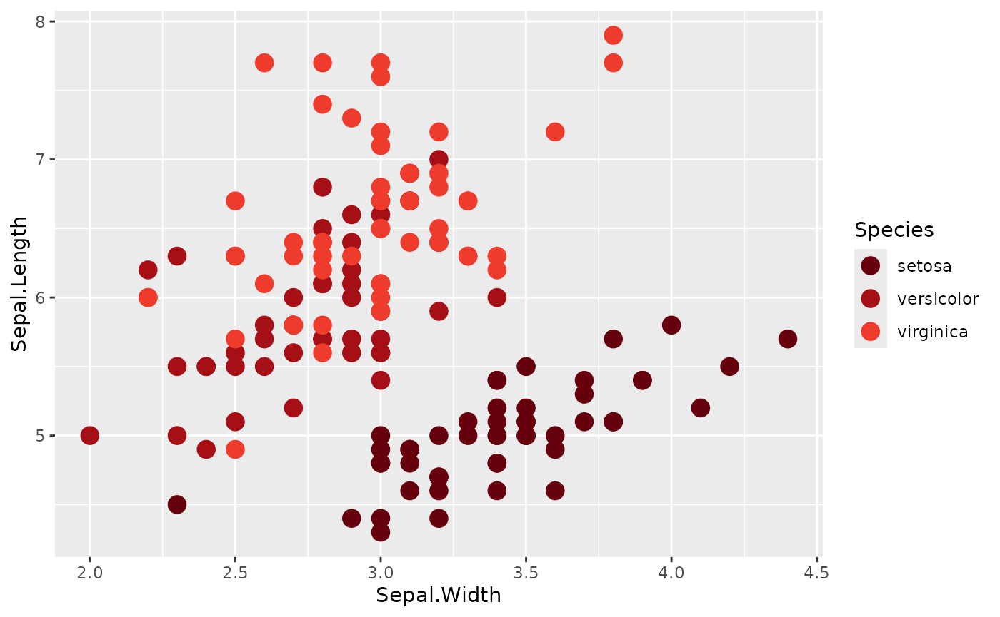

Processing Data with {gnomeR}
Akriti Mishra, Karissa Whiting, Hannah Fuchs
Source:vignettes/data-processing-vignette.Rmd
data-processing-vignette.RmdIntroduction
In this vignette we will walk through a data example to show available {gnomeR} data processing, visualization and analysis functions. We will also outline some {gnomeR} helper functions to use when you encounter common pitfalls and format inconsistencies when working with mutation, CNA or structural variant data.
Setting up
Make sure {gnomeR} is installed & loaded. We will use dplyr for the purposes of this vignette as well.
To demonstrate {gnomeR} functions, we will be using a random sample
of 200 patients from a publicly available prostate cancer study
retrieved from cBioPortal. Data on mutations, CNA, and structural
variants for these patients are available in the gnomeR package
(gnomeR::mutations, gnomeR::cna,
gnomeR::sv).
Note: To access data from cBioPortal, you can use the {cbioportalR} package: https://github.com/karissawhiting/cbioportalR.
Data Formats
Mutation, CNA, or structural variant (also called fusion) data may be formatted differently depending on where you source it. Below we outline some differences you may encounter when downloading data from the [cBioPortal website] (https://www.cbioportal.org/) versus pulling it via the cBioPortal API, and review the important/required columns for each. Example data in this package was pulled using the API.
See cBioPortal documentation for more details on different file formats supported on cBioPortal, and their data schema and coding.
Mutation Data
The most common mutation data format is the Mutation Annotation Format (MAF) created as part of The Cancer Genome Atlas (TCGA) project. Each row in a MAF file represents a unique gene for a specified sample, therefore there are usually several rows per sample. To use MAF files, you need at minimum a sample ID column and a hugo symbol column, though often additional information like mutation type or location are also necessary.
MAF formats are fairly consistent across sources, however if you download the raw data from a study on cBioPortal using the interactive download button you might notice some differences in the variables names in comparison to data imported from the API. For instance, below web-downloaded MAF names are on the left and API-downloaded MAF names are on the right:
* `Tumor_Sample_Barcode` is called `sampleId`
* `Hugo_symbol` is called `hugoGeneSymbol`
* `Variant_Classification` is called `mutationType`
* `HGVSp_Short` is called `proteinChange`
* `Chromosome` is called 'chr'Some of the other variables are named differently as well but those
differences are more intuitive. You can refer to
gnomeR::names_df for more information on possible MAF
variable names.
Luckily, most {gnomeR} functions use the data dictionary in
gnomeR::names_df to automatically recognize the most common
MAF variable names and turn them into clean, snakecase names in
resulting dataframes. For example:
gnomeR::mutations %>% names()
#> [1] "hugoGeneSymbol" "entrezGeneId" "uniqueSampleKey"
#> [4] "uniquePatientKey" "molecularProfileId" "sampleId"
#> [7] "patientId" "studyId" "center"
#> [10] "mutationStatus" "validationStatus" "startPosition"
#> [13] "endPosition" "referenceAllele" "proteinChange"
#> [16] "mutationType" "functionalImpactScore" "fisValue"
#> [19] "linkXvar" "linkPdb" "linkMsa"
#> [22] "ncbiBuild" "variantType" "keyword"
#> [25] "chr" "variantAllele" "refseqMrnaId"
#> [28] "proteinPosStart" "proteinPosEnd"
rename_columns(gnomeR::mutations) %>% names()
#> [1] "hugo_symbol" "entrez_gene_id" "uniqueSampleKey"
#> [4] "uniquePatientKey" "molecular_profile_id" "sample_id"
#> [7] "patient_id" "study_id" "center"
#> [10] "mutation_status" "validation_status" "start_position"
#> [13] "end_position" "reference_allele" "hgv_sp_short"
#> [16] "variant_classification" "functionalImpactScore" "fisValue"
#> [19] "linkXvar" "linkPdb" "linkMsa"
#> [22] "ncbi_build" "variant_type" "keyword"
#> [25] "chromosome" "allele" "refseqMrnaId"
#> [28] "protein_pos_start" "protein_pos_end"As you can see, some variables, such as linkMsa, were
not transformed because they are not used in {gnomeR} functions.
CNA data
The discrete copy number data from cBioPortal contains values that would be derived from copy-number analysis algorithms like GISTIC 2.0 or RAE. CNA data is often presented in a long or wide format:
* Long-format - Each row is a CNA event for a given gene and sample, therefore samples often have multiple rows. This is most common format you will receive when downloading data using the API.
gnomeR::cna[1:6, ]
#> # A tibble: 6 × 9
#> hugoGeneSymbol entre…¹ uniqu…² uniqu…³ molec…⁴ sampl…⁵ patie…⁶ studyId alter…⁷
#> <chr> <int> <chr> <chr> <chr> <chr> <chr> <chr> <int>
#> 1 PTPRS 5802 UC0wMD… UC0wMD… prad_m… P-0001… P-0001… prad_m… -2
#> 2 AR 367 UC0wMD… UC0wMD… prad_m… P-0001… P-0001… prad_m… 2
#> 3 PIK3R1 5295 UC0wMD… UC0wMD… prad_m… P-0002… P-0002… prad_m… -2
#> 4 AR 367 UC0wMD… UC0wMD… prad_m… P-0003… P-0003… prad_m… 2
#> 5 PTEN 5728 UC0wMD… UC0wMD… prad_m… P-0000… P-0000… prad_m… -2
#> 6 B2M 567 UC0wMD… UC0wMD… prad_m… P-0000… P-0000… prad_m… -2
#> # … with abbreviated variable names ¹entrezGeneId, ²uniqueSampleKey,
#> # ³uniquePatientKey, ⁴molecularProfileId, ⁵sampleId, ⁶patientId, ⁷alteration* Wide-format - Organized such that there is one column per sample and one row per gene. Thus, each sample's events are contained within one column. This is most common format you will receive when downloading data from the cBioPortal web browser.
gnomeR::cna_wide[1:6, 1:6]
#> Hugo_Symbol P-0070637-T01-IM7 P-0042589-T01-IM6 P-0026544-T01-IM6
#> 1 SMAD4 0 0 -2
#> 2 CCND1 0 0 0
#> 3 MYC 0 0 0
#> 4 FGF4 0 0 0
#> 5 FGF3 0 0 0
#> 6 FGF19 0 0 0
#> P-0032011-T01-IM6 P-0049337-T01-IM6
#> 1 0 0
#> 2 0 2
#> 3 0 2
#> 4 0 2
#> 5 0 2
#> 6 0 2{gnomeR} features two helper functions to easily pivot from wide- to long-format and vice-versa.
pivot_cna_wider(rename_columns(gnomeR::cna))
pivot_cna_longer(gnomeR::cna_wide)These functions will also relabel CNA levels (numeric values) to characters as shown below:
| detailed_coding | numeric_coding | simplified_coding |
|---|---|---|
| neutral | 0 | neutral |
| homozygous deletion | -2 | deletion |
| loh | -1.5 | deletion |
| hemizygous deletion | -1 | deletion |
| gain | 1 | amplification |
| high level amplification | 2 | amplification |
{gnomeR} automatically checks CNA data labels and recodes as needed
within functions. You can also use the recode_cna()
function to do it yourself if pivoting is unnecessary:
Preparing Data For Analysis
Process Data with create_gene_binary()
Often the first step to analyzing genomic data is organizing it in an
event matrix. This matrix will have one row for each sample in your
cohort and one column for each type of genomic event. Each cell will
take a value of 0 (no event on that gene/sample),
1 (event on that gene/sample) or NA (missing
data or gene not tested on panel). The create_gene_binary()
function helps you process your data into this format for use in
downstream analysis.
You can create_gene_binary() from any single type of
data (mutation, CNA or fusion):
create_gene_binary(mutation = gnomeR::mutations)[1:6, 1:6]
#> ℹ `samples` argument is `NULL`. We will infer your cohort inclusion and resulting data frame will include all samples with at least one alteration in mutation, fusion or cna data frames
#> ! 7 mutations with mutation status marked as blank or NA were retained in the resulting binary matrix.
#> # A tibble: 6 × 6
#> sample_id PARP1 AKT1 ALK APC AR
#> <chr> <dbl> <dbl> <dbl> <dbl> <dbl>
#> 1 P-0001128-T01-IM3 1 1 0 0 0
#> 2 P-0001859-T01-IM3 1 0 0 1 0
#> 3 P-0001895-T01-IM3 1 0 1 0 0
#> 4 P-0001845-T01-IM3 0 1 0 0 0
#> 5 P-0005570-T01-IM5 0 1 0 0 0
#> 6 P-0001768-T01-IM3 0 0 1 0 0or you can process several types of alterations into a single matrix. Supported data types are:
- mutations
- copy number amplifications
- copy number deletions
- gene fusions
All datasets should be in long-format.
When processing multiple types of alteration data, by default there
will be a separate column for each type of alteration on that gene. For
example, if the TP53 gene could have up to 4 columns: TP53
(mutation), TP53.Amp (amplification), TP53.Del
(deletion), and TP53.fus (structural variant). Further, if
no events are observed within the data set for a type of alteration
(let’s say no TP53 mutations but some TP53 amplifications), columns with
all zeros will be excluded. For example, in
colnames(all_bin) below, there is at least one
ERG.fus event, but no ERG mutation events.
Note the use of the samples argument. This allows you to
specify exactly which samples are in your resulting data frame. This
argument allows you to retain samples that have no genetic events as a
row of 0 and NA. If you do not specify such
samples within your sample cohort, rows with no alterations will be
excluded from the final matrix.
samples <- unique(gnomeR::mutations$sampleId)[1:10]
all_bin <- create_gene_binary(
samples = samples,
mutation = gnomeR::mutations,
cna = gnomeR::cna,
fusion = gnomeR::sv
)
#> ! 7 mutations with mutation status marked as blank or NA were retained in the resulting binary matrix.
all_bin[1:6, 1:6]
#> # A tibble: 6 × 6
#> sample_id PARP1 AKT1 ALK APC BRCA2
#> <chr> <dbl> <dbl> <dbl> <dbl> <dbl>
#> 1 P-0001128-T01-IM3 1 1 0 0 1
#> 2 P-0001859-T01-IM3 1 0 0 1 0
#> 3 P-0001895-T01-IM3 1 0 1 0 0
#> 4 P-0001845-T01-IM3 0 1 0 0 0
#> 5 P-0005570-T01-IM5 0 1 0 0 0
#> 6 P-0001768-T01-IM3 0 0 1 0 0
colnames(all_bin)
#> [1] "sample_id" "PARP1" "AKT1" "ALK" "APC"
#> [6] "BRCA2" "CTNNB1" "EPHB1" "FAT1" "JAK1"
#> [11] "SMAD2" "MYC" "NF1" "PDGFRA" "PIK3R2"
#> [16] "PPP2R1A" "ROS1" "TP53" "KMT2D" "SPOP"
#> [21] "PIK3R3" "IRS2" "SPEN" "ASXL2" "KMT2C"
#> [26] "CARD11" "ERG.fus" "TMPRSS2.fus" "PTPRS.Del" "KDM6A.Del"
#> [31] "NKX3-1.Del" "AR.Amp" "TRAF7.Amp" "TSC2.Amp" "FGFR1.Amp"
#> [36] "SOX17.Amp" "RECQL4.Amp" "MYC.Amp" "NBN.Amp"Notes on some helpful create_gene_binary()
arguments:
-
mut_type- by default, any germline mutations will be omitted because data is often incomplete, but you can choose to leave them in if needed. -
specify_panel- If you are working across a set of samples that was sequenced on several different gene panels, this argument will insert NAs for the genes that weren’t tested for any given sample. You can pass a string"impact"indicating automatically guessing panels and processsing IMPACT samples based on ID, or you can pass a data frame with columns sample_id and gene_panel for more fine grained control of NA annotation. -
recode_aliases- Sometimes genes have several accepted names or change names over time. This can be an issue if genes are coded under multiple names in studies, or if you are working across studies. By default, this function will search for aliases for genes in your data set and resolved them to their current most common name.
Collapse Data with summarize_by_gene()
If the type of alteration event (mutation, amplification, deletion,
structural variant) does not matter for your analysis, and you want to
see if any event occurred for a gene, pipe your
create_gene_binary() object through the
summarize_by_gene() function. As you can see, this
compresses all alteration types of the same gene into one column. So,
where in all_bin there was an ERG.fus column
but no ERG column, now summarize_by_gene()
only has an ERG column with a 1 for any type
of event.
dim(all_bin)
#> [1] 10 39
all_bin_summary <- all_bin %>%
summarize_by_gene()
all_bin_summary[1:6, 1:6]
#> # A tibble: 6 × 6
#> sample_id PARP1 AKT1 ALK APC BRCA2
#> <chr> <dbl> <dbl> <dbl> <dbl> <dbl>
#> 1 P-0001128-T01-IM3 1 1 0 0 1
#> 2 P-0001859-T01-IM3 1 0 0 1 0
#> 3 P-0001895-T01-IM3 1 0 1 0 0
#> 4 P-0001845-T01-IM3 0 1 0 0 0
#> 5 P-0005570-T01-IM5 0 1 0 0 0
#> 6 P-0001768-T01-IM3 0 0 1 0 0
colnames(all_bin_summary)
#> [1] "sample_id" "PARP1" "AKT1" "ALK" "APC" "BRCA2"
#> [7] "CTNNB1" "EPHB1" "FAT1" "JAK1" "SMAD2" "MYC"
#> [13] "NF1" "PDGFRA" "PIK3R2" "PPP2R1A" "ROS1" "TP53"
#> [19] "KMT2D" "SPOP" "PIK3R3" "IRS2" "SPEN" "ASXL2"
#> [25] "KMT2C" "CARD11" "ERG" "TMPRSS2" "PTPRS" "KDM6A"
#> [31] "NKX3-1" "AR" "TRAF7" "TSC2" "FGFR1" "SOX17"
#> [37] "RECQL4" "NBN"Analyzing Data
Once you have processed the data into a binary format, you may want to visualize and summarize it with the following helper functions:
Summarize Alterations with tbl_genomic()
This function can be used to display gene summary tables. It is built off the {gtsummary} package and therefore you can use most customizations available in that package to alter the look of your tables.
The gene_binary argument expects binary data as
generated by the create_gene_binary() or
summarize_by_gene() functions. Example below shows the
summary using gene data for ten samples.
Arguments to tbl_genomic() can help customize
your tables:
gene_subsetargument can be used to specify the genes that you want to summarize the data for.freq_cutoffargument subsets the list of genes to those with events observed in at least X% of the samples. In the example below fortb1, if the gene is altered in at least 15% of samples, the gene is included in the summary table.
samples <- unique(mutations$sampleId)[1:10]
gene_binary <- create_gene_binary(
samples = samples,
mutation = mutations,
cna = cna,
mut_type = "somatic_only", snp_only = FALSE,
specify_panel = "no"
)
tbl_genomic(gene_binary = gene_binary, gene_subset = c("PARP1", "ALK"))| Characteristic | N = 101 |
|---|---|
| PARP1 | 3 (30%) |
| ALK | 4 (40%) |
| 1 n (%) | |
| Characteristic | N = 101 |
|---|---|
| ALK | 4 (40%) |
| AKT1 | 3 (30%) |
| APC | 3 (30%) |
| BRCA2 | 3 (30%) |
| PARP1 | 3 (30%) |
| TP53 | 3 (30%) |
| AR | 2 (20%) |
| FAT1 | 2 (20%) |
| KMT2C | 2 (20%) |
| MYC | 2 (20%) |
| SMAD2 | 2 (20%) |
| SPEN | 2 (20%) |
| SPOP | 2 (20%) |
| 1 n (%) | |
Annotate Gene Pathways with add_pathways()
The add_pathways() function allows you add columns to
your gene binary matrix that annotate custom gene pathways, or oncogenic
signaling pathways (add citation).
The function expects a binary matrix as obtained from the
gene_binary() function and will return a gene binary with
additional columns added for specified pathways.
There are a set of default pathways available in the package that can
be viewed using gnomeR::pathways. This new data frame will
include columns for mutations, CNAs, structural variants, and pathways.
You can subset to only the pathways if you choose.
# available pathways
names(gnomeR::pathways)
#> [1] "RTK/RAS" "Nrf2" "PI3K" "TGFB" "p53"
#> [6] "Wnt" "Myc" "Cell cycle" "Hippo" "Notch"
pathways <- add_pathways(gene_binary, pathways = c("Notch", "p53")) %>%
relocate(c(pathway_Notch, pathway_p53), .after = "sample_id")
pathways[1:6, 1:3]
#> # A tibble: 6 × 3
#> sample_id pathway_Notch pathway_p53
#> <chr> <dbl> <dbl>
#> 1 P-0001128-T01-IM3 0 1
#> 2 P-0001859-T01-IM3 0 0
#> 3 P-0001895-T01-IM3 0 0
#> 4 P-0001845-T01-IM3 0 0
#> 5 P-0005570-T01-IM5 0 0
#> 6 P-0001768-T01-IM3 0 1Data Visualizations
The mutation_viz functions allows you to visualize data for the variables related to variant classification, variant type, SNV class as well as top variant genes.
mutation_viz(mutations)
#> $varclass
#>
#> $vartype
#>
#> $samplevar#>
#> $topgenes#>
#> $genecor
Customizing your colors
{gnomeR} comes with 3 distinct palettes that can be useful for
plotting high dimensional genomic data: pancan,
main, and sunset. pancan and
main offer a wide range of colors that can be useful to map
to discrete scales. sunset has fewer colors but offers a
color spectrum useful for interpolation for continuous variables. You
can view hex codes of all colors with gnomer_colors, and
the 3 distinct palettes with gnomer_palettes$pancan,
gnomer_palettes$main, gnomer_palettes$sunset.
The gnomer_palette() is used to set/subset specific
palettes, create a continuous palette, and/or plot palettes to show the
user the specific colors they chose.
The code below will show the first 4 colors from the
pancan palette for a discrete palette.
gnomer_palette(
name = "pancan",
n = 4,
type = "discrete",
plot_col = TRUE,
reverse = FALSE
)
#> [1] "#67000D" "#A50F15" "#EF3B2C" "#FC9272"If you wanted to make a continuous palette you can change the
type= option and specify how many colors your want to use
to create a gradient palette. type = continuous uses
grDevices::colorRampPalette() as the engine to create the
gradient palette. Additionally, gnomer_palette() accepts
additional arguments to be passed to colorRampPalette()
with the parameter .... The example below uses 20
colors.
gnomer_palette(
name = "sunset",
n = 20,
type = "continuous",
plot_col = TRUE,
reverse = FALSE
)
#> [1] "#EAC800" "#EAB807" "#EAA80F" "#EA9817" "#E7892B" "#E37941" "#DF6A57"
#> [8] "#D85B65" "#CF4C6F" "#C73D79" "#BC2D80" "#B01C84" "#A40B88" "#96008B"
#> [15] "#85008B" "#74008B" "#61018B" "#41088A" "#201089" "#001889"Examples how to use gnomer_palette():
library(ggplot2)
ggplot(iris, aes(Sepal.Width, Sepal.Length, color = Species)) +
geom_point(size = 4) +
scale_color_manual(values = gnomer_palette("pancan"))
# use a continuous color scale - interpolates between colors
ggplot(iris, aes(Sepal.Width, Sepal.Length, color = Sepal.Length)) +
geom_point(size = 4, alpha = .6) +
scale_color_gradientn(colors =
gnomer_palette("sunset", type = "continuous"))
Set Color Palettes Globally
If you do not want to constantly have to set the palette for each
plot you can set a palette theme globally for your entire session using
set_gnomer_palette(). Additionally, you can set the
discrete and gradient (appropriate for continuous variables) palette
independently. With the examples below you can see the default colors
change for each plot without having to call a scale_*
function.
set_gnomer_palette(palette = "main", gradient = "sunset")
ggplot(mtcars, aes(wt, mpg, color = factor(cyl))) +
geom_point()
ggplot(mtcars, aes(wt, mpg, color = cyl)) +
geom_point()
You can reset the palettes back to default ggplot color palettes with
reset_gnomer_palette().
reset_gnomer_palette()
ggplot(mtcars, aes(wt, mpg, color = cyl)) +
geom_point()